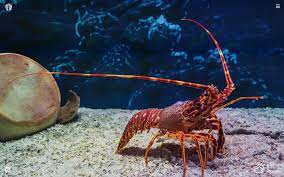

Lobsters are a family (Nephropidae, synonym Homaridae[2]) of large marine crustaceans.
Lobsters have long bodies with muscular tails, and live in crevices or burrows on the sea floor. Three of their five pairs of legs have claws, including the first pair, which are usually much larger than the others. Highly prized as seafood, lobsters are economically important, and are often one of the most profitable commodities in coastal areas they populate.[3]
Commercially important species include two species of Homarus (which look more like the stereotypical lobster) from the northern Atlantic Ocean, and scampi (which look more like a shrimp, or a "mini lobster") — the Northern Hemisphere genus Nephrops and the Southern Hemisphere genus Metanephrops.